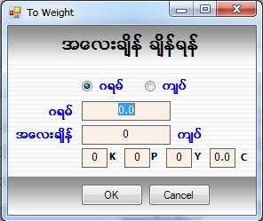
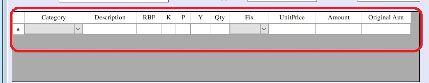

Stock Setup
Stock Setup
Stock Setup(Volume)
Stock Setup(Order)
Loose Diamond Setup

- Transaction အောက်ရှိ Stock Setup ကိုနှိပ်ပါ။ Barcode သတ်မှတ်နိုင်သော Form ဖြစ်သည်။
- Setup တွင် Barcode သတ်မှတ်ခြင်း သုံးမျိုးရှိသည်။ Order, Volume နှင့် Stock အတွက်Barcode သတ်မှတ်ခြင်းတို့ ဖြစ်ပြီး Form စစဖွင့်ခြင်း Stock အတွက် Form ကို စတင်တွေ့ရမည် ဖြစ်ပါသည်၊၊
- Stock အတွက် Barcode တပ်ခြင်းတွင် ရွှေထည်နှင့် ရွှေဖြူ အတွက် သတ်မှတ်နိုင်ပြီး စိန်ထည်များ အတွက်ဆိုလျင် IsDiamond Check Box ကို အမှန်ခြစ်ပေးပြီး Barcode သတ်မှတ်နိုင်ပါသည်။
- Stock# တွင် Stock ID ကို Serial အလိုက် Auto တပ်ပေးပါမည်။ နေ့စွဲ နေရာတွင် လက်ရှိရောက်နေသော Date ကို ပြပေးပါမည်။
- Stock Form ဖြစ်သည့်အတွက် Order နှင့် Volume ကို Check Box on ထားစရာ မလိုပါ။
- တာဝန်ခံ ဝန်ထမ်း ရွေးချယ်ပေးရမည်။
- အမျိုးအစားကို ရွေးချယ်ပေးပါ။ ထိုသို့ရွေးချယ်ပြီးသည်နှင့် Barcode ကို Auto သတ်မှတ်ပေးပြီး အမျိုးအမည်၊ ရွှေရည်၊ ကြိုးရှည် ကွင်းတိုင်း စသည်တို့ကို ဖြည့်စွက်ပါ။ Original Code တွင် မိမိဆိုင်တွင် သတ်မှတ်သော Code သို့မဟုတ် Supplier ဆီမှ Code များကို ထည့်သွင်းနိုင်ပါသည်။ ထိုသို့ သတ်မှတ် Code များကို Barcode ထုတ်သည့်အခါ Original Code ကို Barcode တွင် ထည့်သွင်းဖော်ပြပေးပါမည်။ Supplier ရွေးပါ။ Voucher No ရှိပါက ရိုက်ထည့်ပါ။ ၀ယ်ရင်းဈေးတွင် ဒုံး၀ယ်ရင်းဈေး သို့မဟုတ် ၀ယ်ရင်းဈေး Check Box ကို ရွေးပြီး ထည့်နိုင်ပါသည်။
- ၀◌ယ်ရင်းစေ◌ျးသည် ရွှေချိန် နှင့်ဆိုင်တင်အလျော့ များကို တစ်ကျပ်သား/တစ်ဂရမ်စေ◌ျးဖြင့် တွက်ချက်ပေးမည် ဖြစ် ပြီး ၀◌ယ်ရင်းစေ◌ျး(Total Cost) သည် အရင်းအားလုံး နှင့် ပန်းတိမ် အလျော့ကို တွက်ချက်ပေးမည်ဖြစ်သည်။ လက်ခ၊အဖြူမှုတ်ခ၊အရောင်တင်ခ၊စိန်တပ်ခ တို့ကို ထည့်သွင်းပါက အခြားအဖိုးအခများကို Auto တွက်ချက်ပေးမည်ဖြစ်သည်။၀◌ယ်ရင်းစေ◌ျး =(ရွှေချိန် + ဆိုင်တင်အလျော့)* တစ်ကျပ်သားစေ◌ျး +စိန်ကျောက်စေ◌ျး၀◌ယ်ရင်းစေ◌ျး(Total Cost) =(ရွှေချိန် +ပန်းတိမ်အလျော့)* တစ်ကျပ်သားစေ◌ျး +စိန်ကျောက်စေ◌ျး+အခြားအဖိုးအခများ
- GlobalSetting ရှိ isFixPrice ကို On ထားပါက Sale Price /WholeSale Price ကို ရီုက်ထည့်စရာ မလိုပဲ Auto တွက်ချက်ပြပေးမည်ဖြစ်သည်။ အထည်ချိန်ကို ရွှေချိန်စက်နှင့် တွဲပြီး အသုံးပြုလျင် အပြာရောင်စာသားနှင့်ပေါ်နေသော အထည်ချိန်ကို နှိပ်ပါ။ ထိုအခါ အောက်ပါ Form အတိုင်းကျလာပါမည်။

- ထိုအခါ ရွှေချိန်စက်တွင် အလေးချိန်ငြိမ်သွားပါက စက်ရှိ Print နှိပ်လိုက်လျှင် ဂရမ် အကွက်ထဲသို့ Auto ဝင်လာပါမည်။ ပြီးလျှင် OK Button ကို နှိပ်ပါ။
- အထည်ချိန်ကိုရွှေချိန်စက်နှင့်မချိတ်ဘဲ ဒီအတိုင်းရိုက်ထည့်ပါက K , P, Y (သို့) Gram ချိန်ကိုရိုက်ထည့် နိုင်ပါသည်။ ရွေးချယ်ထားသော ရွှေရည်သည် ရွှေရည်သတ်မှတ်ခြင်း Form တွင် Gram ဟုရွေးချယ်ခဲ့ပါက ဂရမ်ချိန်ကိုပဲ gram အကွက်တွင်ရိုက်ထည့်ရမည်ဖြစ်ပြီး K/P/Y ဟုရွေးချယ်ခဲ့ပါက ကျပ် ၊ ပဲ ၊ ရွေး အကွက်များတွင် ရိုက်ထည့်ရပါမည်။
- အလျော့တွက်ကို သတ်မှတ်ရာတွင်လဲ ထိုနည်းတူစွာဖြစ်ပါသည်။ ရွှေရည်သည် ရွှေရည်သတ်မှတ်ခြင်း Form တွင် Gram ဟုရွေးချယ်ခဲ့ပါက ဂရမ်ချိန်ကိုပဲ gram အကွက်တွင် ရိုက်ထည့်ရမည်ဖြစ်ပြီး K/P/Y ဟုရွေးချယ်ခဲ့ပါက ကျပ် ၊ ပဲ ၊ ရွေး အကွက်များတွင် ရိုက်ထည့်ရပါမည်။ ထိုအလျော့တွက်သည် Customer ကိုရောင်းလျှင်ယူမည့်အလျော့ဖြစ်ပါသည်။
- အထည်ချိန်နှင့် အလျှော့တွက် ကိုပေါင်းပြီး အလေးချိန်ပေါင်းတွင် Auto ပြပေးမည်။
- အထည်တွင်ပါဝင်သော ကျောက်များကို အောက်တွင်ပါရှိသော ဇယားကွက် ကျောက် Grid တွင် သတ်မှတ်နိုင်ပါသည်။ ဇယားကွက်တွင်ထည့်ထားသောကျောက်စုစုပေါင်း၏အလေးချိန်ကို ကျောက်အလေးချိန်တွင် ကြည့်နိုင်ပါသည်။ ရွှေအတင်အလေးချိန်တွင် အထည်ချိန်ထဲမှ ကျောက် အလေးချိန်ကိုနှုတ်ထားသည့်အလေးချိန်ကိုပြပေးပါမည်။

- Category တွင် ကျောက်အမျိုးအစားကိုရွေးချယ်ပါ။ Description တွင် ကျောက်၏ Shape,Color,Clarity,Size စသည်တို့ကိုမှတ်သားချင်ပါက မှတ်နိုင်ပါသည်။
- ထို့နောက် ကျောက်အလေးချိန်ကို ပုံစံနှစ်မျိုးရိုက်ထည့်နိုင်ပါသည်။ RBP တွင် ကာရက် (ct), ရတီ(R), ဘီ(B) ,စိတ် (P) စသည်တို့ကိုရိုက်ထည့်နိုင်ပါသည်။ RBP ကိုရိုက်ထည့်လျှင် ကျပ်၊ပဲ၊ရွေးကို Auto ပြပေးပါမည်။ ကျောက်အလေးချိန်ကို ကျပ်၊ပဲ၊ရွေးဖြင့်သတ်မှတ်လိုလျှင် RBP ကိုရိုက်ထည့်စရာမလိုပါ။ Qty တွင်ကျောက် အရေအတွက်ကိုရိုက်ထည့်ပါ။
- Fix တွင်ကျောက်ဈေးကိုသုံးမျိုးတွက်ပေးနိုင်ပါသည်။
- ‘Fix’ ဆိုလျှင် Unit Price တွင် 1000 ရိုက်ထည့်လျှင် Amount တွင် 1000 ပြနေပါမည်။
- ‘ByWeight’ ဆိုလျှင် ကျပ်၊ပဲ၊ရွေး ကိုရိုက်ထည့်ထား လျှင် Unit Price ရှိဈေးသည် တစ်ကျပ်သားဈေး ဖြစ်ပါသည်။ ရိုက်ထည့်လိုက်သော ကျပ်၊ပဲ၊ရွေး အလေးချိန် ကိုမူတည်ပြီး Amount တွင် ကျသင့်ငွေကိုပြပေးပါမည်။ RBP ကိုရိုက်ထည့်ထားလျှင် Unit Price ရှိဈေးသည် ရတီ(R) ဈေးဖြင့်တွက်ပေးခြင်းဖြစ်ပါသည်။ ရိုက်ထည့်လိုက်သော RBP အလေးချိန်ကိုမူတည်ပြီး Amount တွင်ကျသင့်ငွေကိုပြပေးပါမည်။ Global Setting ရှိ Gem Price တွင် မိမိဆိုင်ရှိ သတ်မှတ် လိုသော ပုံစံကို ရွေးပါ။ Normal ရွေးထားပါက S/W ရှိ ကျောက်ဈေးများကို ရတီထည့်လျှင် ရတီစျေး၊ ကာရက်ထည့်လျှင် ကာရက်ဈေးဖြင့်ပဲ Default တွက်ပေးပါသည်။
- * ကျောက်ဈေးများကို ကာရက်ဖြင့်တွက်လိုလျှင် System Utilities အောက်ရှိ Global Setting တွင် ကာရက် ကိုရွေးပေးရပါမည်။ ရတီဖြင့်တွက်လိုလျှင်လည်း System Utilities အောက်ရှိ Global Setting တွင် ရတီ ကိုရွေးပေးရပါမည်။ ထို့နောက် Master Setup အောက်ရှိ LogOff လုပ်ပေးရပါမည်။
- ‘ByQTY’ ဆိုလျှင် Qty တွင်ရိုက်ထည့်ထားသောကျောက်အရေအတွက်ကို Unit Price တွင်ထည့် ထားသော ဈေးဖြင့်မြှောက်ပေးပြီး Amount တွင်ကျသင့်ငွေကိုပြပေးပါမည်။
- လက်ခ၊ အရောင်တင်ခ၊ စိန်တပ်ခ၊ အဖြူမှုတ်ခ စသည်တို့တွင် လိုအပ်သလိုဖြည့်စွက်နိုင်ပါသည်။ ဓါတ်ပုံထည့်လိုလျှင် Photo အောက်ရှိ Add Button ကို နှိပ်၍ Photo ထည့်သွင်းနိုင်ပါသည်။
- ထို့နောက် အထည်၏ဝယ်ရင်းဈေးကိုတစ်ခါတည်းမှတ်ထားနိုင်ပါသည်။ထိုသို့ ဝယ်ရင်းဈေးထည့်ခြင်း သည် Report တွင် အထည်တစ်ခုချင်းစီ၏ အမြတ်၊အရှုံးကိုပြန်လည်ကြည့်နိုင်ရန်ဖြစ်ပါသည်။ ထိုဝယ်ရင်းဈေးသည် ကိုယ်ဝယ်တုန်းက ဒုံးဝယ်ဈေး(သို့) ပန်းထိမ်ကိုအပ်တုန်းက ကိုယ်ပေးလိုက်သောရွှေရည်၏ ပေါက်ဈေးနှုန်းနှင့်ပန်းထိမ်ကို ပေးရသော အလျော့တွက်ဖြစ်ပါသည်။ ဒုံးဝယ်ရင်းဈေးသည် ထိုအထည်တစ်ခုကို ဒုံးဈေးဖြင့်ဈေးဖြတ်ပြီး ဝယ်ဈေးထည့်ထားခြင်းဖြစ်ပါသည်။ ဒုံးဝယ်ရင်းဈေးမဟုတ်ဘဲ နှုန်းတစ်ခုခုဖြင့်ဝယ်ထားခဲ့သောအထည်ဖြစ်ပါက ထိုအထည်၏ရွှေရည်ပေါ် မူတည်ပြီး ၁ဂရမ်ဈေး (သို့) ၁ကျပ်သားဈေး အကွက်တွင်ဝယ်တုန်းကနှုန်းကိုထည့်ရပါမည်။ ထိုအထည်တွင် ကျောက်ပါရှိလျှင် ထိုကျောက်အတွက်ပေးရသော စိန်၊ကျောက်ဝယ်ဈေး နှင့်အခြားအဖိုးအခ များကိုလဲထည့်ပြီးသတ်မှတ်ထားနိုင်ပါသည်။ အခြားအဖိုးအခ၏ အောက်တွင်ရှိ သော အလျော့တွက်သည် ကိုယ်ဝယ်တုန်းကပေးရသော အလျော့ (သို့) ပန်းထိမ်ကိုပေးခဲ့ ရသော အလျော့ ဖြစ်ပါသည်။
- Data များ ဖြည့်စွက်ပြီးပါက Save Button နှိပ်၍ သိမ်းဆည်းနိုင်ပါသည်။ Save Button ကိုနှိပ်ပြီးပါက Message box တစ်ခုတက်လာပါမည်။ ဘားကုတ်ကိုတစ်ခါတည်းထုတ်မလားဟုမေးခြင်းဖြစ်ပါသည်။ OK ဟုနှိပ်လိုက်ပါက ဘားကုတ်တစ်ခါတည်းထွက်လာပါမည်။ Cancel ကိုနှိပ်လိုက်ပါက Data များကိုပဲ သိမ်းဆည်းသွားပါမည်။
- သိမ်းဆည်းပြီးသား Data များအား ပြန်လည်ကြည့်ခြင်း၊ ပြင်ဆင်ခြင်းများပြုလုပ်ချင်ပါက Stock # ၏ ဘေးတွင် ရှိသော မှန်ဘီလူး button ကိုနှိပ်ပြီးပြန်လည်ကြည့်ရှုပြင်ဆင်ချင်သော Sale Item အား ရွေးချယ် ပြီးပြင်နိုင် ပါသည်။
- Barcode ပြန်ထုတ်ချင်လျှင် Print Button ကိုနှိပ်၍ ထုတ်နိုင်ပါသည်။
- သိမ်းဆည်းပြီးသား ထည့်ပြီးသား Data များကို ဖျက်လိုလျှင် မှန်ဘီလူး button အားနှိပ်ပြီးရှာပါ။ ထို့နောက် မိမိဖျက်လိုသော Data ကို Delete Button ကိုနှိပ်၍ ဖျက်နိုင်ပါသည်။
- Sale Item အသစ်ထည့်လိုပါက New Button ကိုနှိပ်ပြီး အသစ်ထည့်နိုင်ပါသည်။
- Stock Setup Form အား အသုံးပြုပြီးပါက Close Button ကိုနှိပ်၍ ပိတ်နိုင်ပါသည်။
Stock For Volume Setup

- Stock Setup တွင် Volume အတွက် Barcode သတ်မှတ်လိုလျှင် Stock Setup Form ရှိ Volume Check Box ကို အမှန်ခြစ်လျှင် Volume Setup Form ကျလာမည်။
- Volume Stock ဆိုသည်မှာ အသေးစားအထည်များကို အထုပ်တစ်ထုပ်တည်းတွင် စုထည့်ပြီး Barcode တစ်ခု သတ်မှတ်ခြင်း ဖြစ်သည်။
- Stock # တွင် Stock ID ကို Serial အလိုက် Auto တပ်ပေးပါမည်။ နေ့စွဲတွင် လက်ရှိရောက်နေသော အချိန် ဖြစ်သည်။ တာဝန်ခံဝန်ထမ်းရွေးပေးရမည်။
- အမျိုးအစားရွေးချယ်ပါ။ ထိုသို့ရွေးချယ်ပြီးသည်နှင့် Barcode No. တွင် Barcode ကို Auto တွက်ပေးပါမည်။
- Fix Price ဖြင့်ရောင်းချမည်ဆိုပါက Fix Selling Price (For One Item) Check Box ကို အမှန်ခြစ် ခြစ်ထားပေးပြီး သတ်မှတ်ဈေးနှုန်း ထည့်ပေးပါ။ ထိုဈေးနှုန်းသည် အထုပ်ထဲမှ တစ်ခုချင်းစီ ရောင်းချမည့်ဈေးဖြစ်သောကြောင့် ဈေးတူသောအထည်များကိုသာ ထည့်ထားသင့်ပါသည်။ ရွှေရည်ပေါ်မူတည်ပြီး ပေါက်ဈေးဖြင့် ရောင်းမည်ဆိုပါက အမှန်ခြစ် မခြစ်ရပါ။
- စုစုပေါင်းအလေးချိန် ဖြည့်စွက်ပါက ရွှေရည်တွင် ကျပ်သားချိန်ကို အလေးချိန်တွင် K/P/Y ကိုသာ ရိုက်ထည့်နိုင်မည်ဖြစ်ပြီး Gram ရွေးထားပါက Gram ရိုက်ထည့်နိုင်မည်ဖြစ်သည်။
- ဝယ်ရင်းဈေး သတ်မှတ်လိုပါက ဝယ်ရင်းဈေး Check Box ကို အမှန်ခြစ်ပေးပြီး ဈေးနှုန်း ဖြည့်စွက်ပေးရမည်။ ထိုသို့ ဖြည့်စွက်ရာတွင် အထုပ်တစ်ခုလုံး၏ ဝယ်ရင်းဈေးကို တွက်ချက်ပြီး ထည့်ပေးရမည်။
- Solid Volume ကို အမှန်ခြစ်ထားပါက အထည်များအားအလေးချိန်အလိုက်ခွဲရောင်းနိုင်မည်ဖြစ်သည်။( Sale By Weight)
- Solid Volume ကို Checkbox off ထားပါက အထည်များအား တစ်ခုချင်းစီ အရေအတွက်လိုက်ရောင်းနိုင်မည်ဖြစ်သည်။ (Sale by Qty and Weight)
- Volume Stock ကို အရှုံးအမြတ်တွက်ရာတွင် ထိုအထုပ်ထဲမှ အထည်များအားလုံး ရောင်းပြီးမှ အရှုံးအမြတ် တွက်ပေးမည်။ (Reports->Profit for Volume Items)
- Data များ ထည့်သွင်းပြီးပါက Save Button ကို နှိပ်၍ သိမ်းဆည်းနိုင်ပါသည်။
- သိမ်းဆည်းပြီးသော Data များ ပြန်လည်ပြင်ဆင်၊ ကြည့်ချင်ပါက Stock# ဘေးရှိ မှန်ဘီလူးကို နှိပ်၍ ပြန်လည် ကြည့်ရှု ပြင်ဆင်လိုသော Sale Item အား ရွေးချယ်ပြီး ပြင်နိုင်သည်။
- Barcode ထုတ်ချင်လျှင် Print Button ကိုနှိပ်၍ ထုတ်နိုင်သည်။
- Data များပြန်ဖျက်လိုလျှင် မှန်ဘီလူးကို နှိပ်၍ ဖျက်လိုသော Data ကို ရှာပါ။ ဖျက်လိုသော Data ကို Select ပေးပြီး Delete Button ကို နှိပ်၍ ဖျက်နိုင်သည်။
- Sale Item အား အသစ်ထည့်လိုပါက New Button ကိုနှိပ်ပြီး အသစ်ထည့်နိုင်ပါသည်။
- Stock Setup Form အား အသုံးပြုပြီးပါက Close Button ကို နှိပ်၍ ပိတ်နိုင်ပါသည်။
Stock For Order Setup

- Stock Setup တွင် Order အတွက် Barcode သတ်မှတ်လိုလျှင် Stock Setup Form ရှိ Order check box တွင် အမှန်ခြစ်ခြစ်ပေးပါက Order Form ပေါ်လာမည်။
- Customer အော်ဒါလာအပ်သွားသောအထည်များကို ဘားကုတ်သတ်မှတ်ခြင်းဖြစ်ပါသည်။
- Stock # တွင် Stock ID ကို Serial အလိုက် Auto တပ်ပေးပါမည်။
- နေ့စွဲတွင် လက်ရှိရောက်နေသော Date ကိုပြပေးနေမည်ဖြစ်သည်။
- တာဝန်ခံဝန်ထမ်းကိုရွေးပေးရပါမည်။
- Order Voucher Button ကို နှိပ်၍ barcode သတ်မှတ်မည့် OrderInvoice Voucher ကိုရွေးချယ်ပြီး Barcode သတ်မှတ်နိုင်ပါသည်။
- အမျိုးအစားကို ရွေးချယ်ပါ။ ထိုသို့ရွေးချယ်လိုက်သည်နှင့် Barcode No တွင် Barcode ကို Auto တပ်ပေးပါမည်။ အမျိုးအမည်၊ ရွှေရည်၊ ကြိုးရှည်ကွင်းတိုင်း စသည်တို့ကိုဖြည့်စွက်ပါ။ Original Code တွင် မိမိဆိုင်တွင် လက်ရှိအသုံးပြုနေသော Code (သို့မဟုတ်) Supplier ဆီမှ ဝယ်ယူထားသော Code များကို ထည့်သွင်းနိုင်ပါသည်။ ထို Code များကို သတ်မှတ်ထားခြင်းဖြင့် Barcode ထုတ်သည့်အချိန်တွင် ထို Original Code ကို Barcode တွင် ထည့်သွင်းဖော်ပြနိုင်ပါသည်။
- Fix Price နှင့် ရောင်းချမည်ဆိုပါက Fix Price check box ကို အမှန်ခြစ် ခြစ်ထားပေးပြီး သတ်မှတ်ဈေးနှုန်းကို ထည့်ပေးရပါမည်။ ဝယ်ရင်းစျေး သင်္ကေတတွင် ဆိုင်ရှိ ပစ္စည်းတစ်ခုချင်းစီ၏ ဝယ်ရင်းစျေးကို သင်္ကေတဖြင့် လည်းကောင်း ၊ စျေးနှုန်းဖြင့် လည်းကောင်း သတ်မှတ်နိုင်ပြီး ၄င်းကိုလည်း Barcode ထုတ်ရာတွင် ထည့်သွင်းဖော်ပြနိုင်ပါသည်။
- ကျန်သောလုပ်ဆောင်ချက်များသည် အထည်တစ်ခုချင်းစီဘားကုတ်သတ်မှတ်သော Item to Sales Form နှင့်အတူတူပင် ဖြစ်ပါသည်။
- သို့သော် ပါဝင်သောကျောက်အမျိုးအစားထည့်ရာတွင် Customer ဆီမှလက်ခံထားသောကျောက်ဖြစ်ပါက Unit Price တွင် ‘0’ ရိုက်ထည့်ပေးရပါမည်။
- Data များ ဖြည့်စွက်ပြီးပါက Save Button နှိပ်၍ သိမ်းဆည်းနိုင်ပါသည်။
- Barcode ထုတ်ချင်လျှင် Print Button ကိုနှိပ်၍ ထုတ်နိုင်ပါသည်။
- သိမ်းဆည်းပြီးသား Data များအား ပြန်လည်ကြည့်ခြင်း၊ ပြင်ဆင်ခြင်းများပြုလုပ်ချင်ပါက Stock # ၏ ဘေးတွင် ရှိသော မှန်ဘီလူး button ကိုနှိပ်ပြီးပြန်လည်ကြည့်ရှုပြင်ဆင်ချင်သော Sale Item အား ရွေးချယ် ပြီးပြင်နိုင် ပါသည်။
- သိမ်းဆည်းပြီးသား ထည့်ပြီးသား Data များကို ဖျက်လိုလျှင် မှန်ဘီလူး button အားနှိပ်ပြီးရှာပါ။ ထို့နောက် မိမိဖျက်လိုသော Data ကို Delete Button ကိုနှိပ်၍ ဖျက်နိုင်ပါသည်။
- Sale Item အသစ်ထည့်လိုပါက New Button ကိုနှိပ်ပြီး အသစ်ထည့်နိုင်ပါသည်။
- Stock Setup Form အား အသုံးပြုပြီးပါက Close Button ကိုနှိပ်၍ ပိတ်နိုင်ပါသည်။

- Loose Diamond Stock Setup တွင် စိန်အကြွေ အတွက် Barcode သတ်မှတ်လိုလျှင် Stock Setup Form ရှိ Loose Diamond ကို ရွေးချယ်ပေးပါ Loose Diamond Stock setup Form ပေါ်လာမည်။
- စိန်အကြွေများကို ဘားကုတ်သတ်မှတ်ခြင်းဖြစ်ပါသည်။
- Stock # တွင် Stock ID ကို Serial အလိုက် Auto တပ်ပေးပါမည်။
- နေ့စွဲတွင် လက်ရှိရောက်နေသော Date ကိုပြပေးနေမည်ဖြစ်သည်။
- တာဝန်ခံဝန်ထမ်းကိုရွေးပေးရပါမည်။
- Color,Clarity,Shape တို့ကို ဖြည့်စွက်ပေးပါ
- စိန်အမျိုးအစားကို ရွေးချယ်ပါ။ ထိုသို့ရွေးချယ်လိုက်သည်နှင့် Barcode No တွင် Barcode ကို Auto တပ်ပေးပါမည်။ OriginalCode,Description,QTY စသည်တို့ကိုဖြည့်စွက်ပါ။ Original Code တွင် မိမိဆိုင်တွင် လက်ရှိအသုံးပြုနေသော Code (သို့မဟုတ်) Supplier ဆီမှ ဝယ်ယူထားသော Code များကို ထည့်သွင်းနိုင်ပါသည်။
- Fix Price နှင့် ရောင်းချမည်ဆိုပါက Fix Price check box ကို အမှန်ခြစ် ခြစ်ထားပေးပြီး သတ်မှတ်ဈေးနှုန်းကို ထည့်ပေးရပါမည်။ ဝယ်ရင်းစျေး သင်္ကေတတွင် ဆိုင်ရှိ ပစ္စည်းတစ်ခုချင်းစီ၏ ဝယ်ရင်းစျေးကို သင်္ကေတဖြင့် လည်းကောင်း ၊ စျေးနှုန်းဖြင့် လည်းကောင်း သတ်မှတ်နိုင်ပြီး ၄င်းကိုလည်း Barcode ထုတ်ရာတွင် ထည့်သွင်းဖော်ပြနိုင်ပါသည်။
- Data များ ဖြည့်စွက်ပြီးပါက Save Button နှိပ်၍ သိမ်းဆည်းနိုင်ပါသည်။
- Barcode ထုတ်ချင်လျှင် Print Button ကိုနှိပ်၍ ထုတ်နိုင်ပါသည်။
- သိမ်းဆည်းပြီးသား Data များအား ပြန်လည်ကြည့်ခြင်း၊ ပြင်ဆင်ခြင်းများပြုလုပ်ချင်ပါက Stock # ၏ ဘေးတွင် ရှိသော မှန်ဘီလူး button ကိုနှိပ်ပြီးပြန်လည်ကြည့်ရှုပြင်ဆင်ချင်သော Sale Item အား ရွေးချယ် ပြီးပြင်နိုင် ပါသည်။
- သိမ်းဆည်းပြီးသား ထည့်ပြီးသား Data များကို ဖျက်လိုလျှင် မှန်ဘီလူး button အားနှိပ်ပြီးရှာပါ။ ထို့နောက် မိမိဖျက်လိုသော Data ကို Delete Button ကိုနှိပ်၍ ဖျက်နိုင်ပါသည်။
- Sale Item အသစ်ထည့်လိုပါက New Button ကိုနှိပ်ပြီး အသစ်ထည့်နိုင်ပါသည်။
- Loose Diamond Stock Setup Form အား အသုံးပြုပြီးပါက Close Button ကိုနှိပ်၍ ပိတ်နိုင်ပါသည်။